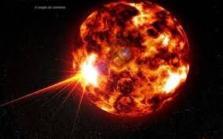
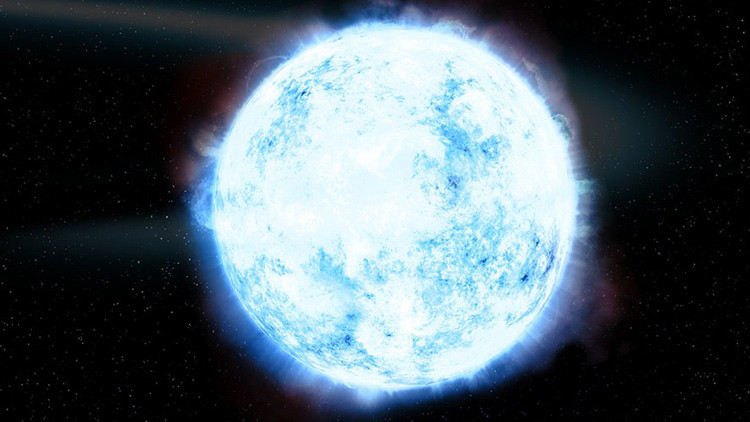
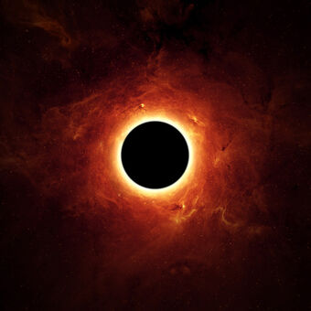
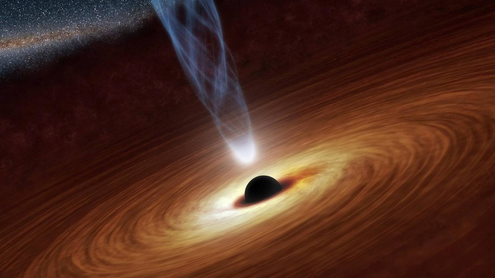

.png)
.png)
.png)
Teniendo en cuenta el tamaño de nuestro fascinante universo, no es difícil imaginar que existan diversos tipos de estrellas diferentes. Desde las pequeñas enanas marrones hasta las estrellas supergigantes rojas y azules. De hecho, existen determinadas estrellas que son realmente extrañas, veamos algunas de ellas.
Se clasifican de acuerdo al momento de sus ciclos vitales en que estén: protoestrellas, gigantes rojas, enanas blancas, enanas negras o estrellas de neutrones (o, en su defecto, agujeros negros).
 |
 |  |  |  |
 |
Dependiendo de qué tan brillantes e intensas sean, se clasifican en (de menor a mayor intensidad y brillo): enanas blancas, sub-enanas, estrellas enanas (como nuestro Sol), sub-gigantes, gigantes, gigantes luminosas, supergigantes, supergigantes luminosas o hipergigantes.

Atendiendo al tipo de emisión electromagnética predominante, podemos hablar de: estrellas tipo O (violeta), tipo B (azules), tipo A (blanquiazules), tipo F (blancoamarillentas), tipo G (amarillas, como el Sol), tipo K (amarillo-anaranjadas), tipo M (rojas-anaranjadas).
.png)